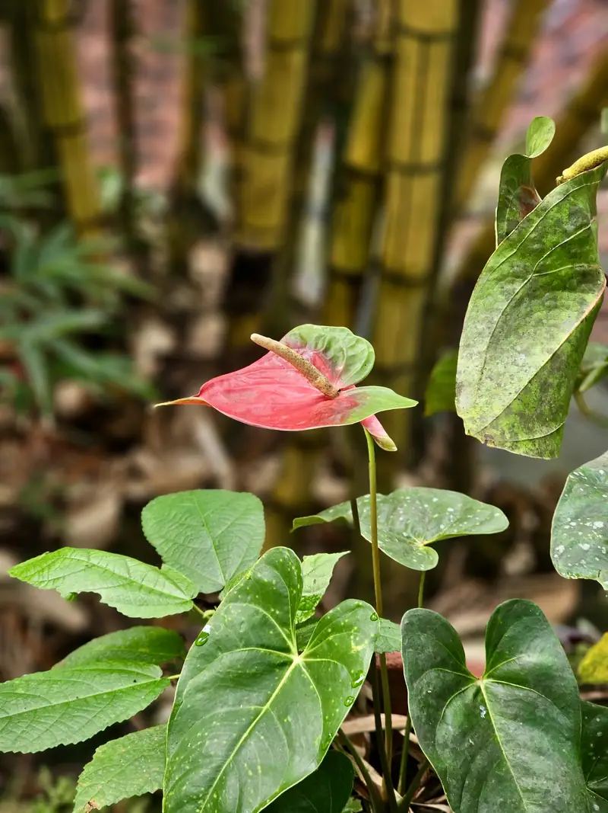
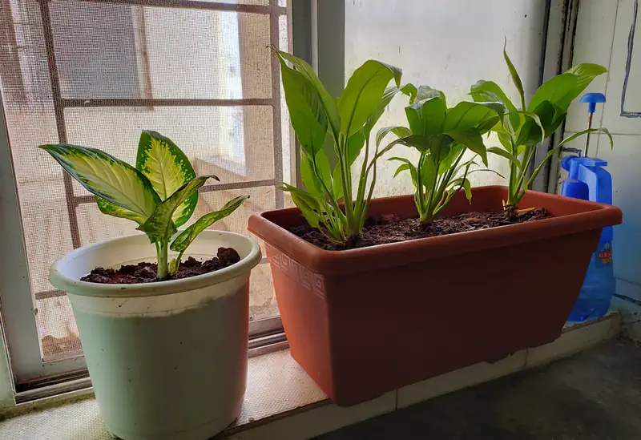

Ansiedad y estrés
Entender los disparadores, regular el cuerpo y volver a dormir bien.
S/ 160 por sesión*
Terapia individual y de pareja · Miraflores y online
Terapia cognitivo-conductual y de aceptación, con un plan claro desde la primera sesión. Sin juicios, a tu ritmo.
CPsP 00000 (ficticio) · 12 años de experiencia* · Sesiones de 50 min
Pedir ayuda no es una señal de debilidad. Es decidir que mereces sentirte mejor. En consulta trabajamos con lo que te pasa hoy, entendemos de dónde viene y practicamos herramientas que puedas usar mañana.

Entender los disparadores, regular el cuerpo y volver a dormir bien.
S/ 160 por sesión*
Comunicación, acuerdos y reparación después de una crisis.
S/ 220 por sesión*

Acompañamiento en pérdidas, mudanzas, rupturas o cambios de trabajo.
S/ 160 por sesión*
Respiración 4-4-6: inhala 4 segundos, sostén 4, exhala 6. Exhalar más largo activa la respuesta de calma. Un minuto basta para notarlo.
“Por primera vez sentí que alguien me explicaba lo que me pasaba sin hacerme sentir rara.”
— A., 31 años
“Llegamos a punto de separarnos. Hoy discutimos menos y nos escuchamos más.”
— M. y J.
“Las sesiones online me salvaron: las tomo desde el auto en el almuerzo.”
— R., 42 años
Depende del motivo. Para ansiedad leve solemos trabajar entre 8 y 12 sesiones; lo revisamos juntas cada mes.
Sí. Todo lo que hablamos está protegido por el secreto profesional, salvo riesgo grave para ti o terceros.
La evidencia muestra resultados equivalentes para la mayoría de motivos. Solo necesitas un espacio privado.
Esta web no es un servicio de emergencias. Si estás en peligro, llama a la línea de emergencias de tu país o acude al hospital más cercano.
La primera sesión sirve para conocernos y ver si encajamos. Si no, te recomiendo a otra colega.
Paso 1 de 3
¿Cómo prefieres la sesión?
Elige día y hora
Casi listo